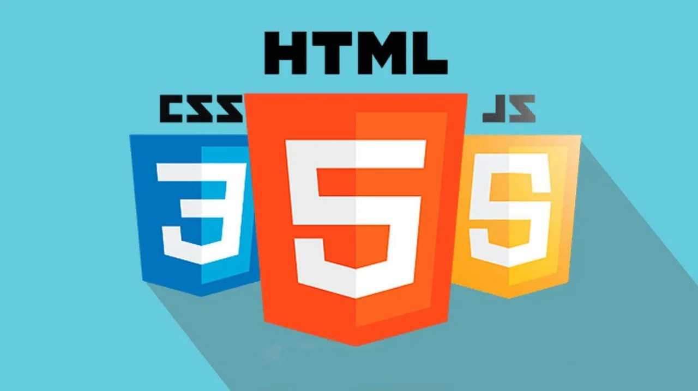
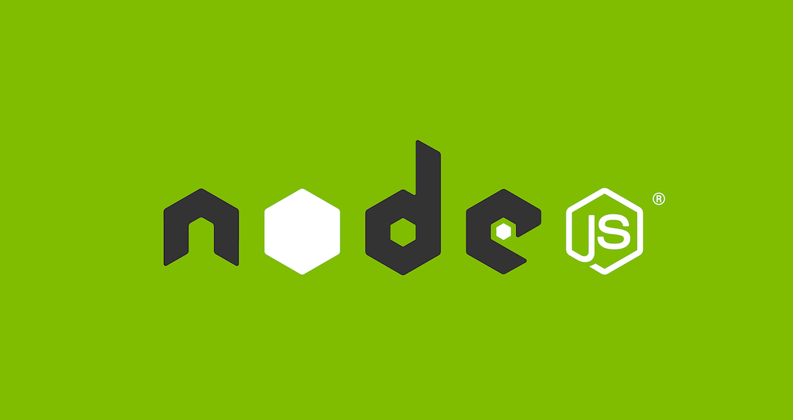

MI PORTAFOLIO WEB
¡Hola! Bienvenido a mi portafolio virtual. Aquí podrás conocer mis habilidades, ver algunos de los proyectos en los que he trabajado y encontrar distintas formas de contacto. También comparto un poco sobre mí y mi proceso de aprendizaje.
Este espacio refleja mi dedicación y crecimiento, así que espero que disfrutes explorarlo y puedas dejar tu opinión para seguir mejorando.
¿POR QUÉ ESTA WEB?
Nace de una noche donde entendí que los conocimientos no se ejercen aprendiendo más, o realizando ejercicios básicos, el conocimiento nace cuando aplico lo que sé en un proyecto real, por eso, está página web contiene todo lo que he aprendido en cursos.
Curso donde he aprendido todo sobre páginas web.Tecnologías que usé aquí:

HTML
Este lenguaje de marcado se usó para darle la estructura a la web.

CSS
Esta tecnología se usó para darle el estilo y la estética a la página web.

JavaScript
Este lenguaje de programación fue utilizado para darle dinamismo a la web.
Adrián Enrique Orozco Botero
¡Hey! Soy un joven de 20 años, nacido en Cartagena de Indias, Colombia. Actualmente soy estudiante de la Fundación Universitaria Colombo Internacional (Unicolombo), donde me formo en Ingeniería de Sistemas y estudio inglés británico, combinando la tecnología con el crecimiento personal y profesional.
Trabajo como auxiliar de inventario y también realizo trabajos de manera espontánea, lo que me ha permitido desarrollar disciplina, responsabilidad y adaptabilidad en distintos entornos. Me considero una persona que no se conforma con lo básico, siempre estoy buscando aprender algo nuevo, mejorar mis habilidades y crecer constantemente.
Soy apasionado por las motos, la buena comida, el entrenamiento físico y todo aquello que me rete a ser mejor. Disfruto construir ideas, resolver problemas y explorar el mundo de la tecnología, especialmente en el desarrollo de sistemas y soluciones innovadoras.
Además, tengo un fuerte enfoque en mis valores y en mi propósito de vida, lo que me impulsa a avanzar con determinación en cada área en la que me desarrollo, tanto personal como profesionalmente.
Este espacio es una muestra de quién soy, lo que sé hacer y hacia dónde voy. 🚀
¿Cuáles son mis habilidades?

CSS + HTML + JavaScript
Estoy realizando cursos sobre las 3 tecnologías, con sus respectivos fundamentos.

Java
He visto este lenguaje de programación durante 2 años, vi fundamentos, POO, etc.

Node Js
Sigo en progreso, sin embargo, tengo ya fundamentos y los primeros pasos de este entorno.

SQL
Sé la parte conceptual, modelos y manejo gestores de bases de datos como MySQL y SQLite.